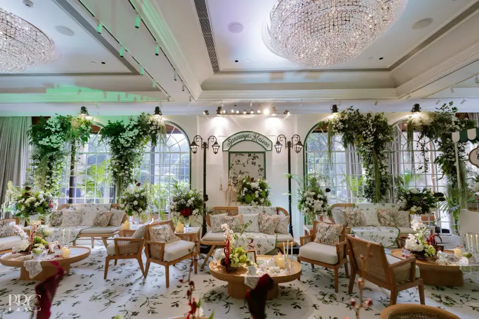
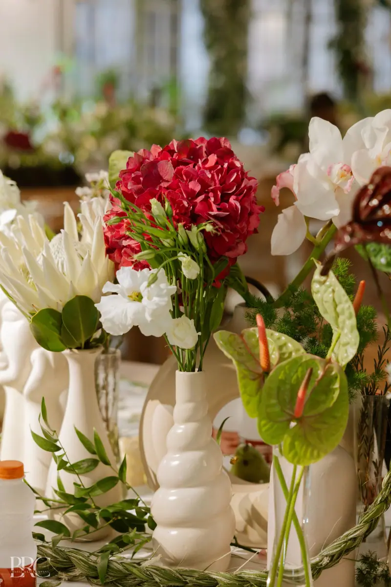
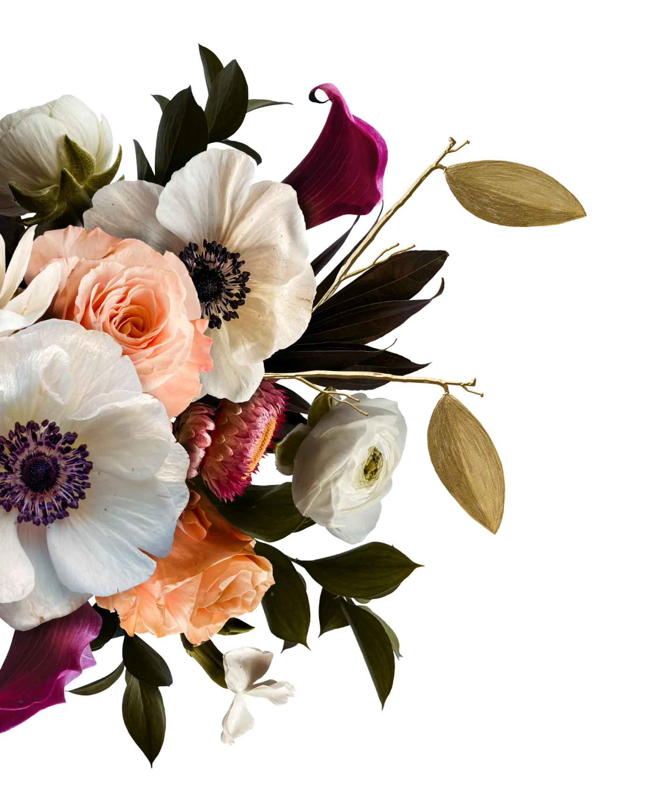
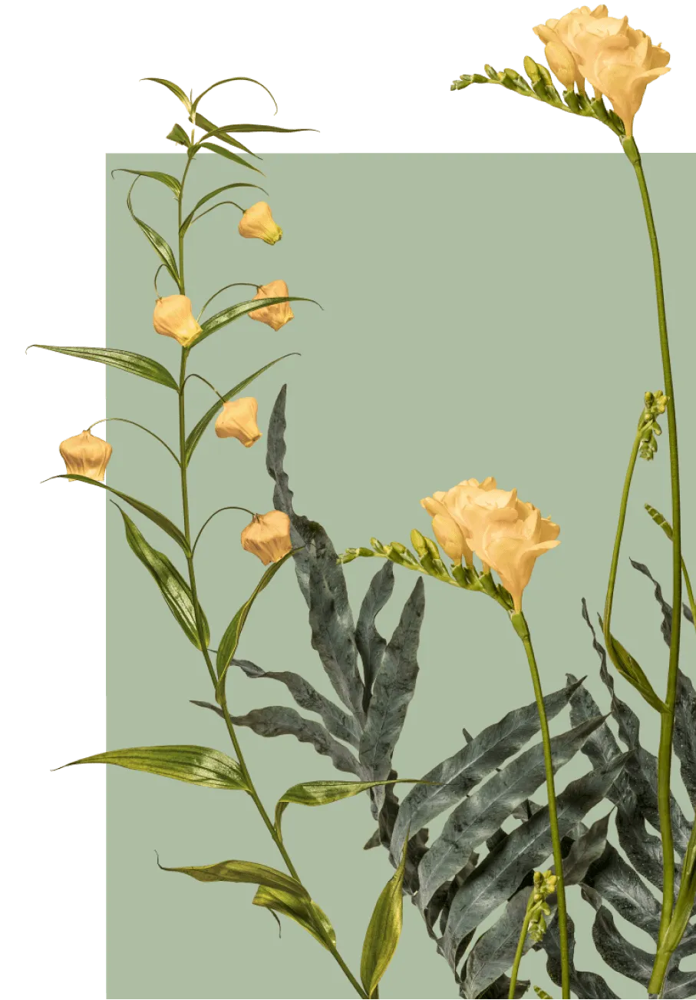
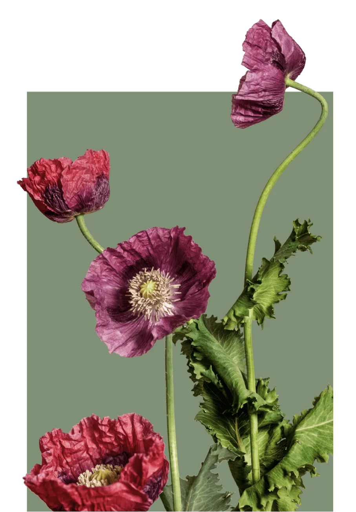
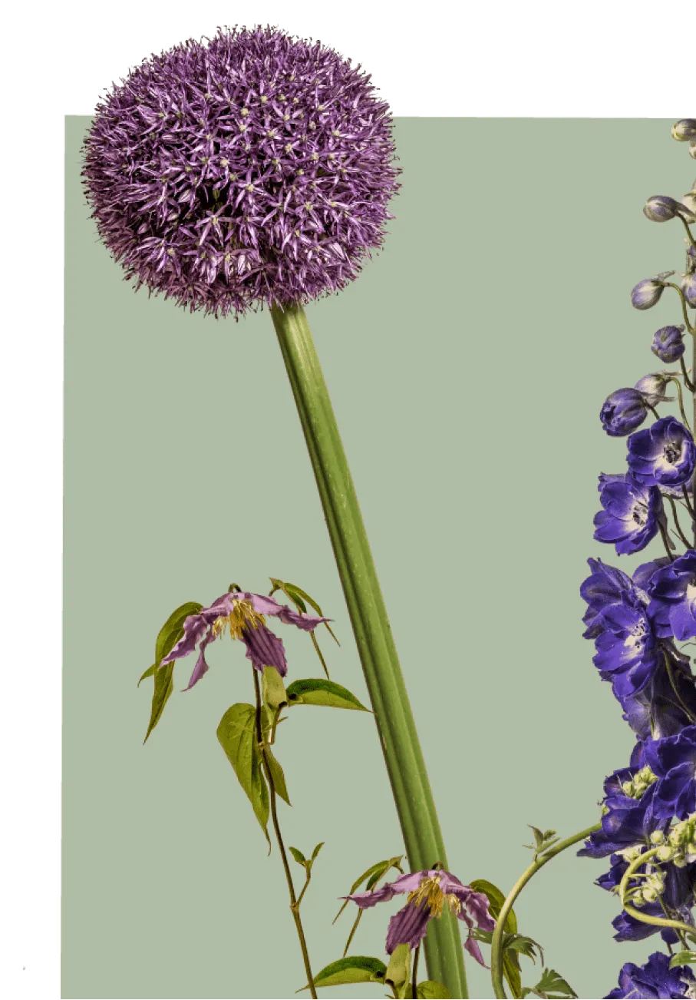
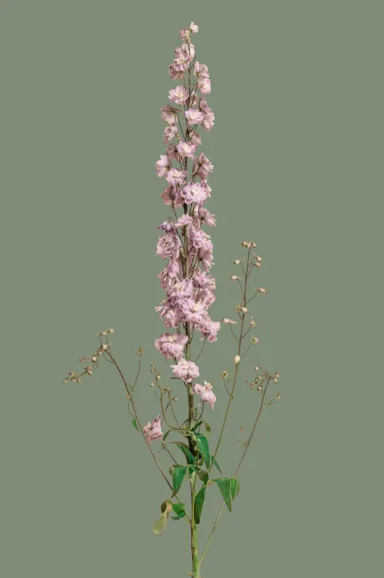
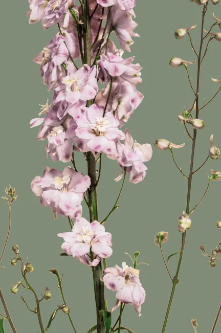
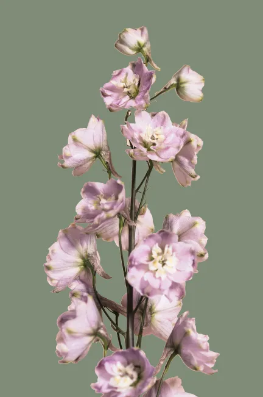
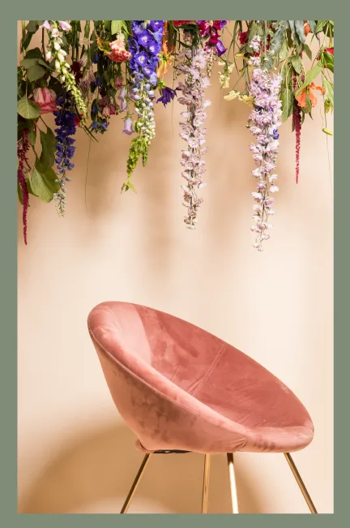

Botanical daylight
A room in bloom
White flowers, trailing greenery and a room made for gathering.

Floral design, thoughtful spaces
and the joy of gathering.

Every stem, a little possibility.
Flowers for meaningful gatherings, thoughtfully imagined spaces and moments you want to remember. Discover a floral world shaped around you.
Browse services


Floral arches, tablescapes and sculptural arrangements.
Flowers, vessels and the space around them, designed as one complete story.
Fresh colour, lasting textures and the beautiful lines of foliage. A different character in every stem, and a floral direction for every kind of setting.
Tell us about the occasion, the setting and the feeling you want to create. Bring the colours you love, the details you notice and the ideas that are still taking shape.
From there, we explore a floral direction together. A considered palette, expressive forms and thoughtful proportions, with every element belonging to the same story.




Intimate arrangements and immersive settings. Flowers, vessels and the room around them, brought together with a shared sense of purpose.
Different places. Different palettes.
A few of the settings we’ve brought into bloom.
White flowers, trailing greenery and a room made for gathering.
Sculptural flowers, warm light and a richer kind of colour.
Crafted objects, layered textiles and flowers with a sense of place.
See something you love? Save a photograph to your inspiration as you explore.
A composition shaped around your space, its light and the atmosphere you love.
Colour, texture and the character of each stem, given room to be themselves.
Flowers, vessels and the surrounding setting, composed as one complete story.
Floral ideas, the details behind a setting and a little inspiration for what comes next.
A little clarity for the first conversation.
Start with the occasion, your date if you know it, and the venue or city. A few words about the atmosphere you love—and photographs saved from our work—make a useful starting point.
Yes. Open a project and choose “Save inspiration” on the photographs you like. Your edit can hold up to eight images and can be included with your enquiry brief.
You can leave those details open. Begin with your ideas, save a draft and return to it as your plans take shape.
Our selected celebrations bring together botanical daylight, richer evening colour and heritage-inspired details. Open each story to explore the full setting and its closer details.
You can save your details and inspiration on this device, then download a brief to share with the studio. Preparing a draft here does not send a message.